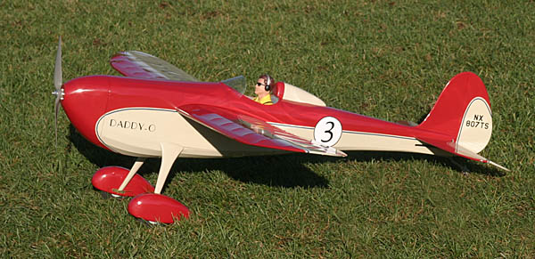

Daddy-O 525 Racer |
|---|
| Posted 9/29/07, revised 9/23/08 |
|  |
With the considerable success of my original, smaller Daddy-O, I began thinking about larger versions almost immediately. I had also been thinking about a few changes to the basic design. Some CAD sketching had revealed that the Daddy-O would look fantastic on floats, and I had always thought that the original planform didn't seem quite balanced. It wasn't off enough to make me want to change the small one when I built it, but I did want to see how it looked with a slight tweak. The wing seemed just a touch too stubby to me, especially with a horizontal stabilizer that was rather large due to its Free Flight heritage. A few more sketches showed that the smaller Daddy-O would look fantastic with a 35-inch span, without giving up any of the Golden Age character of Jason McGuire's original Free Flight design. That extra wing area would also be welcome when it came time to mount a float kit (see below). I juggled a bunch of numbers, and decided that a 50% increase of the 35-inch span sketch would be interesting. This percentage scales the new model to a 52.5-inch span. 
Though only a 50% increase, the apparent size difference is significant. |
The original prototype really needs a pilot now! As before, the finish is SIG Manufacturing's AeroKote Lite. This time with dark red on cream, and dark blue pinstriping. The lettering is CNC cut vinyl. |
| Bill Stevens of Stevens AeroModel generously laser cut a set of prototype parts. I started construction in early May and my goal was to have the model flying by the NEAT Fair in mid September.
NEAT Fair 2007 - Well, somehow life got in the way of my modeling again, and I just made it to NEAT with a completed, covered airframe, but it was far from finished. A little work at the field had the radio and power system installed, and ready for the test flights by Saturday afternoon at NEAT. In deference to the event rules, I waited until official flying had ended for the day, then handed the transmitter off to David Payne for the first flight honors. David landed after about 8 minutes and was all grins. I flew for another 5 minutes or so and found, as the numbers and David's smile had indicated, that this one felt almost exactly the same as the original. |
photo by Mark Foster |
| Unfortunately only two others, Chris Parent and Jason Cole, got to fly the Daddy-O 525 at NEAT this year. On Sunday morning I found the throttle dead while on the ground between a couple of circuits. Seconds later ugly yellow smoke poured out of the cowl and cockpit, and I sprinted onto the field to rip out the smouldering speed control. Fortunately the damage was limited to a few holes in the covering from splattering solder. Once back home, I replaced the speed control and added a switching BEC to power the radio. |
|
NEAT Fair 2008 - The NEAT Fair was quite exciting this year, as I had the Daddy-O finished, repaired after a summer midair, and even equipped with a set of old Sullivan floats to test out its seaworthiness. The short story is that the floats were a great success, and I had plenty of volunteers willing to help me run 15-20 packs through the model over the course of the weekend. I didn't keep closer track, as we were having way too much fun flying! Swapping between the wheels and the floats takes less than two minutes, so there was plenty of fun in both configurations. The rudder is very effective, and allows some very impressive slips on approach when flying with wheels. The side area of the floats reduce the rudder's authority some, but not so much that I feel the urge to add any additional area aft. |
 photo by Jack Tracey |
photo by Jack Tracey |
|
The performance is just as delightful as the small version, though with quite a bit more power available. With the wheels mounted it will climb almost vertically, and I have measured a sustained rate of climb at over 1800 feet per minute. Throttling back for normal maneuvering and cruising gives an honest 16 minutes on a 2100mAh pack. The actual flight duration is slightly less with floats, but messing about on the water between a landing and the next takeoff maintains a similar time between pack changes. Bill Stevens finally got a chance to fly the model this year on both wheels and floats. He liked what he saw, and we are hoping to offer a kit that will accommodate both wheels and floats through Stevens AeroModel before the end of 2008. The NEAT Fair judges also showed their appreciation by awarding this Daddy-O "Best Sport Model" two years after the smaller original was similarly recognized. |
| Daddy-O 525 Stats | |
|---|---|
| Wingspan: | 52.5 inches |
| Length: | 42 inches |
| Wing Area: | 482 square inches |
| Motor: | Hacker A30-16M outrunner |
| Speed Control: | Castle Creations Phoenix 35 ESC |
| Propeller : | APC 11x5.5e propeller |
| Battery: | 3S, 1800 to 2500mAh Li-Poly |
| BEC: | Dimension Engineering SportBEC |
| Radio: | Futaba 10C with Futaba 2.4GHz FASST module & receiver |
| Servos: | Hitec HS-56s (ailerons), HS-81s (rudder and elevator) |
| Wheels | Floats | |
|---|---|---|
| Flying Weight: | 42 ounces | 50.7 ounces |
| Wing Loading: | 12.55 ounces per square foot | 15.15 ounces per square foot |
| Power Loading: | 125 watts per pound | 104 watts per pound |
|
|
photo by Mark Foster |
photo by Jack Tracey |
Daddy-O 525
|
WRAM Show 2008 |
NEAT Fair 2008 |
|---|
Copyright 2008, Thayer Syme. All rights reserved